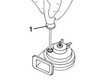

5550B34 horn tone - adjust
- Path
- Procedures > 55 ELECTRICAL EQUIPMENT > 5550 WARNING AND MANOEUVRING INDICATORS > 5550B HORNS > 5550B34 horn tone - adjust
- Kind
- repair procedure (removal / refitting; the operation number is the code)
- Applies to
- all engines; all production periods
- Interactive page
- https://sloeber94.github.io/elrnDB-fMltpl/en/#/2891946
Applies to: all engines; all production periods
 Removing
Removing
 Refitting
Refitting5550B30 L/H OR R/H HORN (ONE) - R+R
1. Act on the special adjustment screw and adjust the tone of the horn.

Applies to: all engines; all production periods
Refitting
RemovingTest the horn to check that the tone is correct.